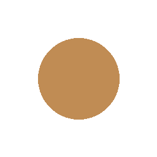

FILOSOFIA


LE MATERIE PRIME
Ingredienti selezionati
In ogni creazione di Sato, la tradizione e la creatività si fondono in un equilibrio armonioso.
Usiamo ingredienti freschissimi, materie prime selezionate e uno sguardo attento alla qualità, per offrire un’esperienza culinaria autentica e memorabile.
Un’esperienza
memorabile

